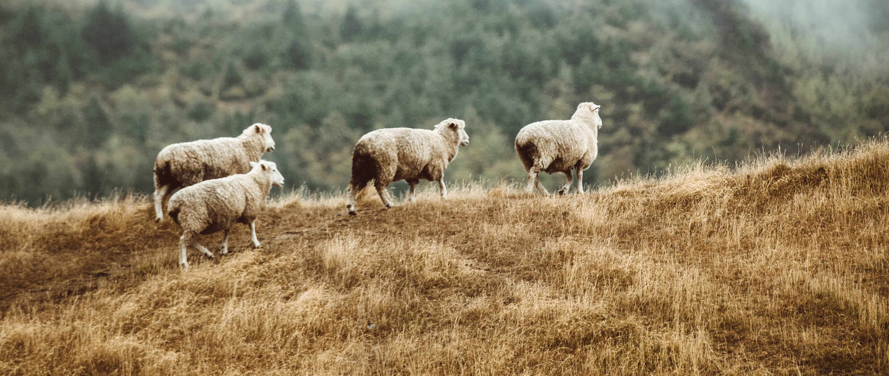

library(ggplot2)
library(sf)
library(ggtext)
library(showtext)
library(terra)
#add custom fonts
font_add('fa-brands', here::here('fonts/fa-brands-400.ttf'))
font_add('andika', here::here('fonts/Andika-Regular.ttf'))
showtext_auto()
library(dplyr)New Zealand Sheep
Day 7 of the #30DayMapChallenge - Raster

Today’s goal was to learn about placing some inset images into plots. I had originally planned on using something via ggsave, but because I was just using plain png images, it was easier to insert these using richtext option from the ggtext. Although it is meant to be used to render HTML or markdown text, we can also make use of it’s ability to render HTML to add images.
For the raster, I decided to use density of sheep from the Gridded Livestock of the World dataset. This contains global rasters of the density of common livestock and is great for when you want to know just how many sheep are there in New Zealand?
Create basemap data
While we don’t end up using a polygon of the outline of New Zealand in the final map, we will use it for cropping the raster to the outline of the country.
nz.poly <- spData::world %>%
filter(iso_a2 == "NZ") %>%
dplyr::select(iso_a2)We then load the raster of sheep. I’ve already roughly cropped this to the area surrounding New Zealand to save on file size. We then crop the raster using our outline of New Zealand, making sure we set mask = TRUE so it crops to the outline. If this was set to false, it would only crop it to the extent of the polygon and we would have some messy raster cells nearby. I also transform the scale the number of sheep to be by the 1000. It turns out, New Zealand has a lot of sheep.
sheep <- rast("nzSheep.tif")
#crop to new zeland outline
sheep <- crop(sheep, nz.poly, mask = TRUE, touches = TRUE)
sheep.df <- as.data.frame(sheep, xy = TRUE) %>%
mutate(sheep1k = nzSheep/1000)Create the map
One frustrating aspect of using a scripted language to create a map is that the fine-tuning of placement and alignment of items can become tedious as you slowly change the numbers corresponding to coordinates to identify the best location. However, a great thing about this is that, once you have the general location sorted, you can automate some of this.
Below, I set a kind of architecture for where I’d like my insets to go by defining the base coordinates of the first inset and the spacing between insets, and then calling those objects in the plot. Then, when something changes, I can change the measures in one place instead of at multiple places within the ggplot call. It also cleans up the code in the ggplot call because we just use that one dataframe, insead of an annotate line for each image.
#set colors
blue.bg <- "#A4C3D2"
#starting sheep coordinates
sheep.x <- 169.5
sheep.y <- -37.4
sheep.width <- 0.75
sheep.height <- 1.2
#create dataframe of sheep icon coordinates
sheep.icons <- data.frame(x = rep(c(sheep.x + (c(1:3)*sheep.width)), 2),
y = rep(c(sheep.y, sheep.y-sheep.height), each = 3),
label = "<img src='sheep-white.png' width='30'/>")
#caption label
#define caption for easier reading
caption.lab <- paste0("#30DayMapChallenge<br>",
"<b>Source: </b>GLW3, Konkapp, DinosoftLabs<br>",
"<span style='font-family:fa-brands;'></span> mvevans89")
#create sheep plot
sheep.map <- ggplot() +
geom_raster(data = sheep.df, aes(x = x, y = y, fill = sheep1k)) +
scale_fill_gradient(high = "#fff2cb", low = "#e7acf2",
name = bquote(atop(Thousand~Sheep~phantom(),
per~"10km"^2))) +
guides(fill = guide_colourbar(title.position="top", title.hjust = 0)) +
#add title
annotate(geom = "richtext", x = 169.5, y = -36, label = "New Zealand has the<br>highest person:sheep ratio in the world", family = "andika") +
#add in little emojis
#human
annotate(geom = "richtext", label ="<img src='user-white.png' width='50'/>",
x = 168, y = -38, fill = NA, color = NA) +
#colon
annotate(geom = "richtext", fill = NA, color = NA, text.color = "white", label = ":",
family = "andika", x = 168.75, y = -38, size = 14) +
#add six sheep using dimensions assigned above
geom_richtext(data = sheep.icons, aes(x = x, y =y, label = label), fill = NA, color = NA) +
# add caption
annotate(geom = "richtext", x = 178.40, y = -34.5, fill = NA, label.color = NA,
color = "gray20", size = 2.5, hjust = 1,
label = caption.lab) +
theme(panel.background = element_rect("#A4C3D2"),
panel.grid = element_blank(),
axis.text = element_blank(),
axis.title = element_blank(),
axis.ticks = element_blank(),
legend.position = c(0.85,0.1),
legend.direction = "horizontal",
legend.text = element_text(size = 8, color = "gray20", family = "sans"),
legend.title = element_text(color = "gray20", family = "sans"),
legend.background = element_rect(fill = "#A4C3D2"))